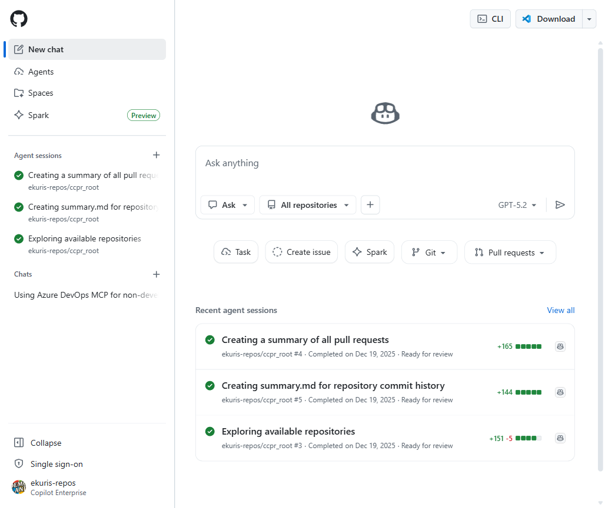
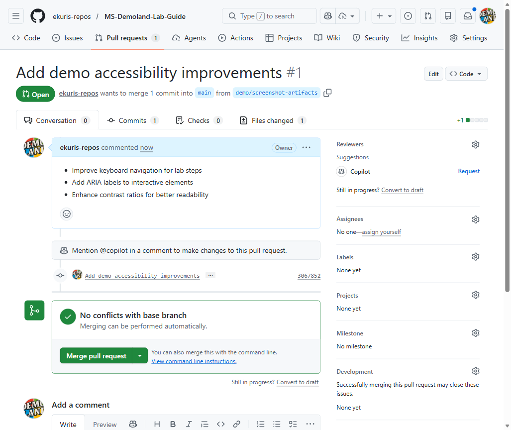

Unified Tooling - Copilot and the Thing
Connect repositories, trackers, and project knowledge, then use Copilot to draft answers you can verify
Overview
What We'll Cover
Today's Agenda
- The Scattered Tools Problem - why multi-platform sprawl slows teams down
- GitHub as a Unified Platform - Issues, Projects, Discussions, Wikis, and Actions
- Copilot Ties It Together - scope questions and organize project context with Spaces
- Copilot on GitHub.com - ask questions and review PR and issue summaries
- Copilot in VS Code for Non-Developers - an optional repository exploration path
- Practical Workflows - draft, check sources, and share
- Integrations - connect approved tools like Jira, Azure DevOps, and Slack
- Getting Started - pilot one workflow and measure the results
Part 1
The Scattered Tools Problem
Too Many Tools, Too Many Tabs
- Source code lives in one platform; issue tracking lives in another
- Documentation is split across wikis, SharePoint, Confluence, and Google Docs
- Project boards sit in Jira, Trello, or an internal spreadsheet
- Team communication happens in Slack, Teams, and email simultaneously
- Answering "What is the current status of Project X?" requires several sources
The Real Cost of Tool Sprawl
Time Lost
Switching platforms and searching for the right source interrupts work. Measure that effort in your own team's pilot.
Knowledge Gaps
When information lives in silos, decisions can miss relevant context. New team members must learn which tool holds each answer.
graph TD
Work[Project Work] --> Tool1[Planner Tool]
Work --> Tool2[Code Tool]
Work --> Tool3[Docs Tool]
Work --> Tool4[Chat Tool]
Tool1 -.silo.-> Tool2
Tool2 -.silo.-> Tool3
Tool3 -.silo.-> Tool4
Part 2
GitHub as a Unified Platform
More Than Source Code
| Feature | How it connects the work |
|---|---|
| Issues | Track tasks, bugs, assignees, milestones, and recorded blockers |
| Projects | Plan issues and PRs in tables, boards, and roadmaps with custom fields |
| Discussions | Share Q&A, announcements, and decisions at repository or organization scope |
| Wikis and repo docs | Explain the project; choose documentation sources explicitly for Copilot |
| Actions | Automate CI/CD, repository events, and scheduled tasks |
| Pull requests | Discuss and review proposed changes before merging them |
Why Colocation Matters
Before: Scattered
- Issue in Jira references a PR in GitHub
- Design doc in Confluence links to a spreadsheet
- Slack thread has context that never gets recorded
After: Connected
- Related issues, PRs, and discussions link to each other
- Documentation records decisions near the work
- Selected sources give Copilot useful project context
Part 3
Copilot Ties It Together
Your AI-Powered Guide to Project Context
- Ask questions in natural language about a specific project or source
- Provide repository context, issue or PR links, and relevant documentation
- Draft summaries of issues, PRs, and discussions you can access
- Inspect the sources and ask what information is missing
- Useful to non-developers as well as developers
How Copilot Finds Context
- Relevant sources - choose a repository, file, issue, PR, or discussion for the question
- Copilot Spaces - collect project docs and issue/PR references for reusable onboarding context
- Access still applies - a shared Space does not grant access to restricted sources
- Coverage is not guaranteed - retrieval selects relevant content, not every file or wiki page
Part 4
Copilot on GitHub.com
Copilot Chat on GitHub.com
- Sign in with Copilot access and permission to the repository you want to use
- Open github.com/copilot or use the Copilot entry point on GitHub
- Start with a repository or a specific issue/PR URL, then ask a focused question
- Check linked sources, dates, and unresolved questions before using the answer
- Availability depends on your plan and organizational policies

PR Summaries & Issue Summaries
Pull Request Summaries
- Ask Chat to explain a linked PR for a non-technical stakeholder
- The editor's Copilot actions → Summary drafts a description or comment
- Review the result before sharing or posting
Issue Summaries
- Open the issue in Copilot Chat or supply its URL
- Ask for decisions, recorded blockers, and unresolved questions
- Long threads can reduce summary quality; check key comments

Part 5
Copilot in VS Code for Non-Developers
Exploring Repos Without Writing Code
- With Git and approved Copilot access set up, clone a trusted repo into VS Code
- Choose a question-focused workflow; review enabled tools and approval settings
- Ask: "Explain this README and identify the files that support your answer"
- Do not enable editing or terminal tools for simple exploration
- Inspect the referenced files; asking a question is not a read-only guarantee
Practical Tasks in VS Code
Read and Understand
- "Explain this file in simple terms and point to the evidence"
- "Which environment variables are documented here?"
- "Which external APIs can you identify in these selected files?"
Optional Reviewed Edits
- Draft a README improvement or release-note section
- Inspect the diff before accepting changes
- Have config changes validated and reviewed through a PR
Part 6
Practical Workflows
Workflow: "What's the Status of Project X?"
- Scope: Select the repository and relevant issue/PR links for checkout-redesign
- Ask: "Summarize these sources for the past seven days. Link evidence for progress and recorded blockers; list unknowns"
- Check: Open the sources, confirm dates and blocker relationships, and ask owners about gaps
- Share: Publish the reviewed draft with source links and an as-of date

Workflow: "Summarize This PR for a Stakeholder"
- Open Copilot Chat and provide the pull request URL
- Ask: "Explain this PR for a non-technical stakeholder. Link the evidence and separate proposed changes from confirmed outcomes"
- Check the PR description, review discussion, and merge state; confirm business impact with its owner
- Share a reviewed explanation with the source link, not an unchecked AI answer
Workflow: Onboarding a New Team Member
- Start from a team-maintained Space with a README, decision document, and relevant issue/PR links
- Ask: "Using these sources, explain the payments service and link the supporting files"
- Follow up: "Which ownership information is documented, and what should I confirm with the team?"
- Check source access and freshness; ask a person when context is missing
- Keep reviewed decisions in team documentation so future hires can reuse them
Part 7
Connecting External Tools
Integrations: Meeting Teams Where They Are
- Jira & Azure Boards - link GitHub development activity to work items; full issue synchronization needs a separately configured solution
- Slack & Teams - approved GitHub apps support notifications and issue collaboration; capabilities depend on the app and version
- MCP - approved servers can expose tools or data to supported Copilot surfaces, with appropriate access and policy
- Check the boundary - a link or notification does not automatically make external content available to Copilot
- Keep a clear system of record and connect only the access your workflow needs
Part 8
Getting Started
What to Consolidate First
- Step 1: Choose one pilot team and one status or onboarding question
- Step 2: Confirm Copilot access, source permissions, organizational policy, and a system of record
- Step 3: Connect relevant issues and repo docs; collect useful context in a Space
- Step 4: Use approved integrations for information that must stay elsewhere; check actual retrieval coverage
- Step 5: Measure search effort, answer accuracy, onboarding support, and review time
Migration Tips
Do
- Start with one team and a clear system of record
- Migrate gradually; use approved integrations as a bridge
- Write useful README files and maintain selected Space sources
- Label issues consistently and record blockers explicitly
Avoid
- Trying to migrate everything at once
- Abandoning tools before replacements are ready
- Assuming a connector provides complete synchronization or AI context
- Sharing a generated report without checking its evidence
Summary
Wrap-Up & Next Steps
Key Takeaways
- Connecting related work can reduce searching and knowledge gaps
- GitHub combines planning, documentation, review, and automation features
- Copilot answers depend on relevant context and permitted access, not automatic coverage of everything
- Spaces can make selected project context reusable for the team
- Summaries help draft updates; people check sources and own the final message
- VS Code exploration is optional; tool permissions and review still matter
- Use approved integrations, pilot one workflow, and measure actual results
Thank You
Questions? Reach out on Teams or open an issue.